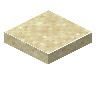

护栏砂石桥
Balustrade Sandstone Bridge
英文名: Balustrade Sandstone Bridge命名空间 ID:
mcwbridges:balustrade_sandstone_bridge类型: 方块所属模组: Macaw's Bridges资料检索: 🔎 在 MC百科 搜索「护栏砂石桥」合成获得 (2)
有序合成Macaw's Bridges

原始 JSON
{
"type": "minecraft:crafting_shaped",
"group": "balustrade_bridges",
"pattern": [
"FFF",
"WWW"
],
"key": {
"F": {
"item": "minecraft:sandstone_wall"
},
"W": {
"item": "minecraft:sandstone_slab"
}
},
"result": {
"count": 5,
"id": "mcwbridges:balustrade_sandstone_bridge"
}
}
原始 JSON
{
"type": "minecraft:stonecutting",
"ingredient": {
"item": "minecraft:sandstone"
},
"result": {
"count": 1,
"id": "mcwbridges:balustrade_sandstone_bridge"
},
"group": "stonecutting"
}